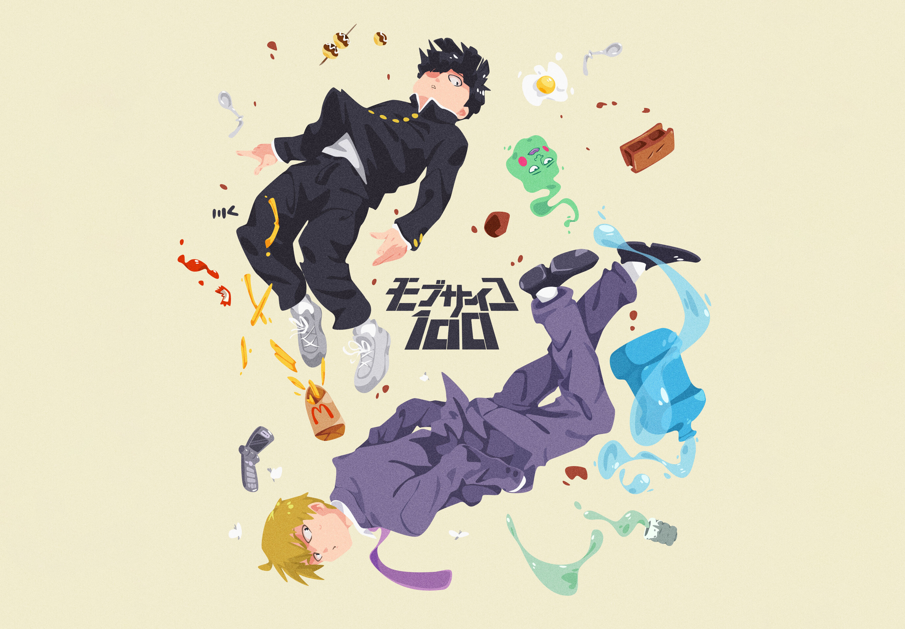

Favorite Anime
Discover my favorite Anime shows of all time.
Tip:
You can also click the image to know more.

Mob Psycho 100
Mob Psycho 100 (Japanese: モブサイコ100, Hepburn: Mobu Saiko Hyaku) is a Japanese web manga series written and illustrated by One.
Read more
Chainsaw Man
Chainsaw Man (Japanese: チェンソーマン, Hepburn: Chensō Man) is a Japanese manga series written and illustrated by Tatsuki Fujimoto.
Read more
Saint Young Men
Saint Young Men (Japanese: 聖セイント☆おにいさん, Hepburn: Seinto Oniisan) is a Japanese slice of life comedy manga series written by Hikaru Nakamura.
Read more